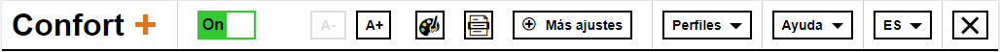
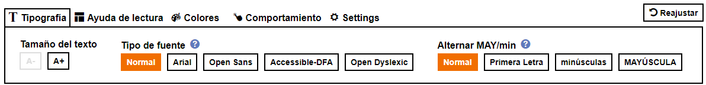
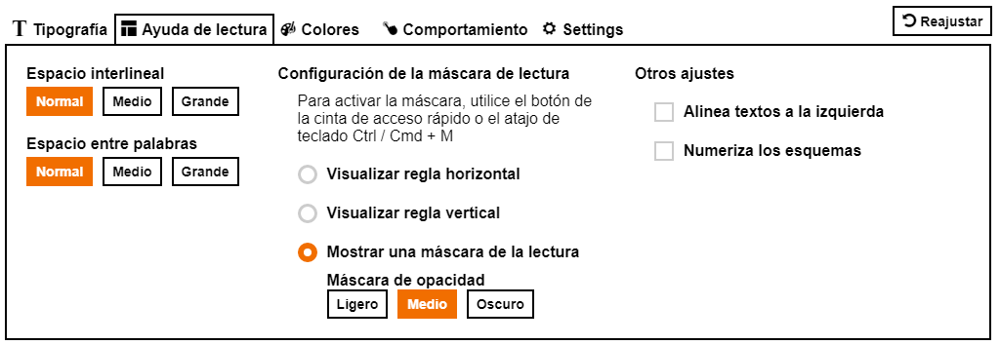
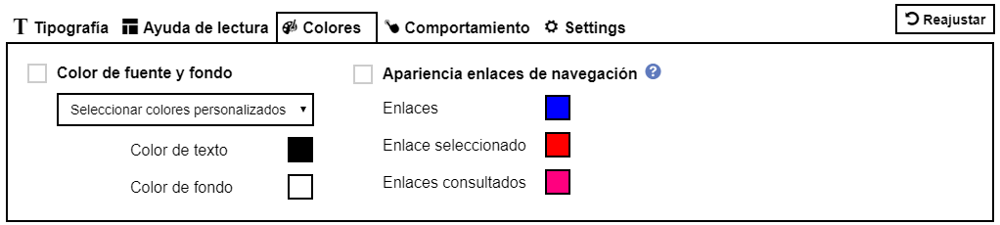
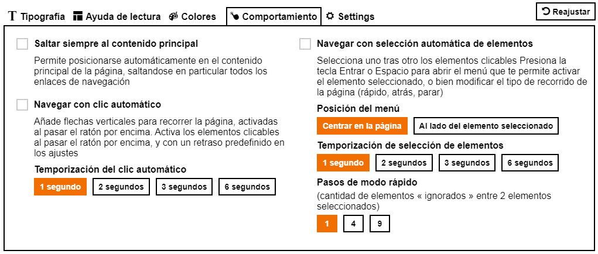

El servicio Orange Confort+
El servicio Orange Confort+
Orange Confort+: Una solución que mejora la lectura de un sitio web para el confort de todos
El servicio Orange Confort+, es un servicio OpenSource que permite adaptar el aspecto visual de un sitio Web mejorando
así la comodidad de lectura.
Si tienes discapacidad visual o una simple fatiga visual, te cuesta reconocer o leer las palabras por razones de
dislexia u otras particularidades; si tienes dificultad para usar un ratón o no sabes cómo establecer los ajustes
en tu ordenador, Confort + te ofrece la solución. ¿Cómo? Confort+ te permite aumentar el tamaño de letra, o incluso
elegir colores con un contraste adaptado a tus necesidades, espaciar caracteres, retirar elementos innecesarios
como imágenes, para finalmente optimizar la lectura adaptada a tu necesidad.
¡Así que si consideras que puede ayudarte, no dudes en instalarlo en tus páginas web, es gratuito!
Confort + es una extensión compatible con los siguientes navegadores; Firefox, Chrome y Internet Explorer 11
Para instalarlo pincha aquí:

¿Para quién está destinado el servicio Orange Confort+?
El servicio Orange Confort+, es un servicio 100% Orange, que ofrece una ayuda importante a los usuarios con discapacidad
motora, visual, usuarios con fatiga visual, con dislexia o disgrafía, pero también mejora la experiencia de todos
los usuarios.
¿Quién no ha deseado nunca, al atardecer, tener la posibilidad de aumentar el tamaño de letra, o bien el contraste de color de un sitio web?
Nuestras pautas de diseño surgen como consecuencia de estudios realizados con expertos en accesibilidad, ergónomos y con verdaderos usuarios, que nos han aportado sus experiencias y explicado sus necesidades del día a día, usuarios a los que agradecemos su colaboración. La conclusión de todo este trabajo, nos ha permitido realizar una interfaz simple, y de fácil uso.
Los ajustes que ofrece Confort+ han sido estudiados para cubrir las necesidades del mayor número de personas, sin impactar el rendimiento del sitio web.
Este servicio está basado en un concepto básico: no es posible predefinir de manera simple, las preferencias de un usuario web en función de una tipología predefinida y genérica, ya sea para un usuario con o sin discapacidad.
En consecuencia, este servicio ofrece una posibilidad de selección libre de ajustes, totalmente personalizada a las necesidades de cada usuario y adaptada a sus preferencias, cuándo y cómo decida.
Para mejorar la experiencia del usuario así como facilitar la adopción del servicio, Orange Confort+ propone una visualización en tiempo real de los ajustes que se están eligiendo. De esta manera, el usuario encontrará muy rápidamente los ajustes óptimos adaptados a sus necesidades. Este servicio está disponible en francés, inglés y español. El idioma por defecto es el del sitio web visitado, y es posible modificarlo.
El servicio garantiza la preservación de la información contenida en la página. No se modifica ninguna información cuando el servicio está activado.
¿Quién no ha deseado nunca, al atardecer, tener la posibilidad de aumentar el tamaño de letra, o bien el contraste de color de un sitio web?
Nuestras pautas de diseño surgen como consecuencia de estudios realizados con expertos en accesibilidad, ergónomos y con verdaderos usuarios, que nos han aportado sus experiencias y explicado sus necesidades del día a día, usuarios a los que agradecemos su colaboración. La conclusión de todo este trabajo, nos ha permitido realizar una interfaz simple, y de fácil uso.
Los ajustes que ofrece Confort+ han sido estudiados para cubrir las necesidades del mayor número de personas, sin impactar el rendimiento del sitio web.
Este servicio está basado en un concepto básico: no es posible predefinir de manera simple, las preferencias de un usuario web en función de una tipología predefinida y genérica, ya sea para un usuario con o sin discapacidad.
En consecuencia, este servicio ofrece una posibilidad de selección libre de ajustes, totalmente personalizada a las necesidades de cada usuario y adaptada a sus preferencias, cuándo y cómo decida.
Para mejorar la experiencia del usuario así como facilitar la adopción del servicio, Orange Confort+ propone una visualización en tiempo real de los ajustes que se están eligiendo. De esta manera, el usuario encontrará muy rápidamente los ajustes óptimos adaptados a sus necesidades. Este servicio está disponible en francés, inglés y español. El idioma por defecto es el del sitio web visitado, y es posible modificarlo.
El servicio garantiza la preservación de la información contenida en la página. No se modifica ninguna información cuando el servicio está activado.
Ajustes que ofrece el servicio
-
Tipografía
Ampliación del tamaño de letra, modificación del tipo de letra y del espacio en el texto: útil para los usuarios con dislexia o digrafía, aquellos que tienen dificultades de visión, o simplemente los que tienden a una vista cansada. 
-
Disposición
Modificación del estilo de presentación, aparición de reglas de lectura: principalmente útil para los invidentes, los usuarios que tienen dificultad para ubicar la información en una página, y los usuarios que no pueden usar el ratón o navegar únicamente con el teclado. 
-
Colores
Disponible una paleta personalizada de color de texto y del color de fondo de página que permite jugar con los contrastes de la página según preferencias de lectura. 
-
Comportamiento

La navegación por punteo
Esta ayuda es muy útil para usuarios que se encuentran en la imposibilidad de ejercer una presión sobre el ratón o sobre el teclado. En la página aparece una barra con 2 flechas (arriba/abajo) que permite, al posar el ratón y sin ejercer ningún clic, mover la página hacia arriba y hacia abajo. También cuando el ratón se posa encima de un elemento clicable de la página, por ejemplo un enlace, éste se activa después de un tiempo preestablecido por el usuario: 1 segundo, 2 segundos, etc.La navegación por selección automática de los elementos
Esta ayuda es fundamental para los usuarios que no pueden hacer uso del ratón, sino solamente ejercer una presión sobre una tecla del teclado. Recorre en modo automático todos los elementos clicables de la página, así como todos los formularios. Al presionar las teclas Espacio o Entrada del teclado se abre un menú contextual que permite elegir las siguientes opciones: activar el elemento seleccionado, continuar el recorrido de la página, pasar al modo navegación rápida (2 elementos por 2, 5 por 5, etc.), o navegar hacia atrás.
¿Eres desarrollador? Cómo integrar Orange Confort+ en tus páginas
El servicio es poco intrusivo, se integra en la página como un enlace, cuyo aspecto puedes personalizar al igual que su posición
en la página.
Cuando un usuario activa el servicio a través del enlace, la barra de ajustes del servicio se inserta automáticamente en lo alto de la página, desplazando el contenido de la página hacia abajo.
Se puede utilizar Confort+ en cualquier sitio web, sin embargo para que el servicio funcione de modo óptimo, es preferible que tu sitio web respete las recomendaciones de accesibilidad WCAG 2.0
En tu sitio web, el servicio Orange Confort+ se introduce a través de una simple inclusión de un fichero JavaScript en el código HTML
Cuando un usuario activa el servicio a través del enlace, la barra de ajustes del servicio se inserta automáticamente en lo alto de la página, desplazando el contenido de la página hacia abajo.
Se puede utilizar Confort+ en cualquier sitio web, sin embargo para que el servicio funcione de modo óptimo, es preferible que tu sitio web respete las recomendaciones de accesibilidad WCAG 2.0
En tu sitio web, el servicio Orange Confort+ se introduce a través de una simple inclusión de un fichero JavaScript en el código HTML
El fichero JavaScript del servicio Orange Confort+ está alojado en un servidor. Este servidor puede ser el de tu sitio web, o bien un servidor a distancia alojado por un tercero (en otro dominio) Si eliges un servidor distante albergado por un socio, el usuario del servicio Orange Confort+ recobrará sus ajustes en todos los sitios que utilizan este servidor.
Orange Confort+ usa la fuente de texto OpenDyslexic
Orange Confort+ usa la fuente de texto Luciole